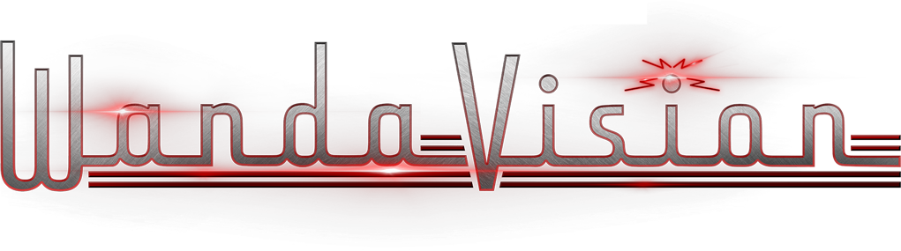
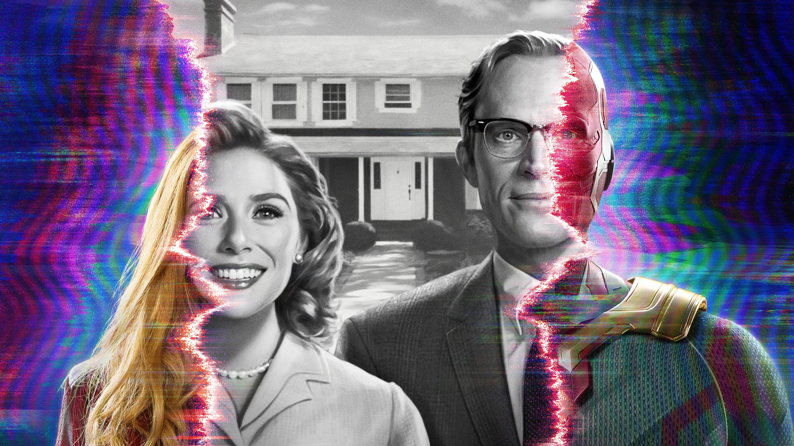

|  | About | Characters | Trailers | WATCH NOW! |
|---|---|---|---|---|
|  | ||||
|
||||
|
||||
CAST & CHARACTERS |
||||
Elizabeth Olsen as Wanda Maximoff / Scarlet Witch:An Avenger who can harness chaos magic, engage in telepathy and telekinesis, and alter reality. Paul Bettany as Vision:An android and former Avenger created using the artificial intelligences J.A.R.V.I.S. and Ultron as well as the Mind Stone, who was killed in the film Avengers: Infinity War (2018). Bettany portrays a new version of the character created by Maximoff within her reality from the part of the Mind Stone that lives in her, who is the embodiment of her sadness, hope, and love. Kathryn Hahn as Agatha Harkness:A witch who masquerades as "Agnes", Maximoff and Vision's "nosy neighbor" within the fictional WandaVision sitcom. Teyonah Parris as Monica Rambeau:The daughter of Air Force pilot Maria Rambeau and a captain in S.W.O.R.D., who introduces herself in the fictional WandaVision sitcom as "Geraldine". She has a "toughness and an ability to be a woman" in a male-dominated world. Randall Park as Jimmy Woo:An FBI agent working with S.W.O.R.D. who previously was the parole officer of Scott Lang / Ant-Man. Park felt introducing Woo using close-up magic, something he was trying to perfect in Ant-Man and the Wasp (2018). Kat Dennings as Darcy Lewis:An astrophysicist working with S.W.O.R.D. who previously interned for Jane Foster and befriended Thor. |
||||
TRAILERS |
||||
© Marvel Studios 2022Developed by Deepak Parmar |
||||